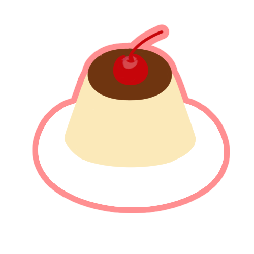
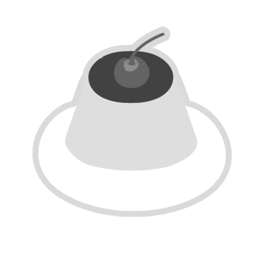

"웹에 접속만 해도 탐험하는 것 같은 즐거움을 주고 싶은 개발자,
박보영입니다!"
안녕하세요! 저는 웹과 사용자간의 재미있는 의사소통을 기획하고 싶은 프론트엔드 개발자 박보영입니다.
웹은 단순히 해바라기처럼 나의 일방적인 소통으로만 이루어진다고 생각했던 제게, 보여지는 시각적인 면뿐이 아닌 보이지 않는 미묘한 동작들이 주는 진정한 아름다움과 즐거움을 가르쳐주었습니다.
마치 단절되고 일방적인 관계처럼 느껴지던 웹 세상에서 다양한 애니메이션 모션들, 기다리는 데에 재미를 더한 동적인 모형들, 스크롤을 내리면 내가 찾는 정보를 재미있게 탐색시켜주는 다양한 반응들 등의 등장으로 사용자는 더 이상 웹을 혼자서 탐색하지 않고 face to face로 실시간으로 이루어지는 서로 간의 역동적인 소통에 단순히 보여지는 면을 넘어서서 웹을 탐험하는 것 같은 즐거움을 선사하는 프론트엔드 개발자에 큰 매력을 느끼게 되었습니다. 제가 맡게 될 다양한 웹사이트들을 이용하는 사용자에게 즐거운 웹사이트 탐험을 할 수 있도록 다양한 즐겁고 적절한 요소들을 버무린 프론트엔드 개발자가 되고 싶습니다!

푸딩비의 스킬들!
HTML


CSS
Javascript
html
- div와 span의 미세한 차이와 사용 용도에 대해 인지하고 있습니다.
- charset="UTF-8"의 의미를 알고 있습니다.
- 시멘틱 태그의 의미와 사용 이유에 대해 알고 있습니다.
- <head> 태그와 <body> 태그의 용도와 차이가 무엇인지 이해하고 있습니다.
css
- HTML문서에서 link를 거는 위치를 알고 있고 여러 css 파일이 있는 경우 link 문장을 여럿 사용보다 (통상적인 이름의 파일)style.css과 같이 여러 css파일을 연결 시켜주는 큰 범주의 css를 HTML과 연결 시킨 후, 나머지 css 파일들을 큰 css 파일에 @import시키는 방법을 알고 있습니다.
- :root라는 개념을 통해 반복되는 값을 변수로 지정하는 방법의 코딩과 그에 대한 유지 보수의 간편성에 대해 인지하고 있습니다.
- HHTML문서에서 link를 거는 위치를 알고 있고 여러 css 파일이 있는 경우 link 문장을 여럿 사용보다 (통상적인 이름의 파일)style.css과 같이 여러 css파일을 연결 시켜주는 큰 범주의 css를 HTML과 연결 시킨 후, 나머지 css 파일들을 큰 css 파일에 @import시키는 방법을 알고 있습니다.